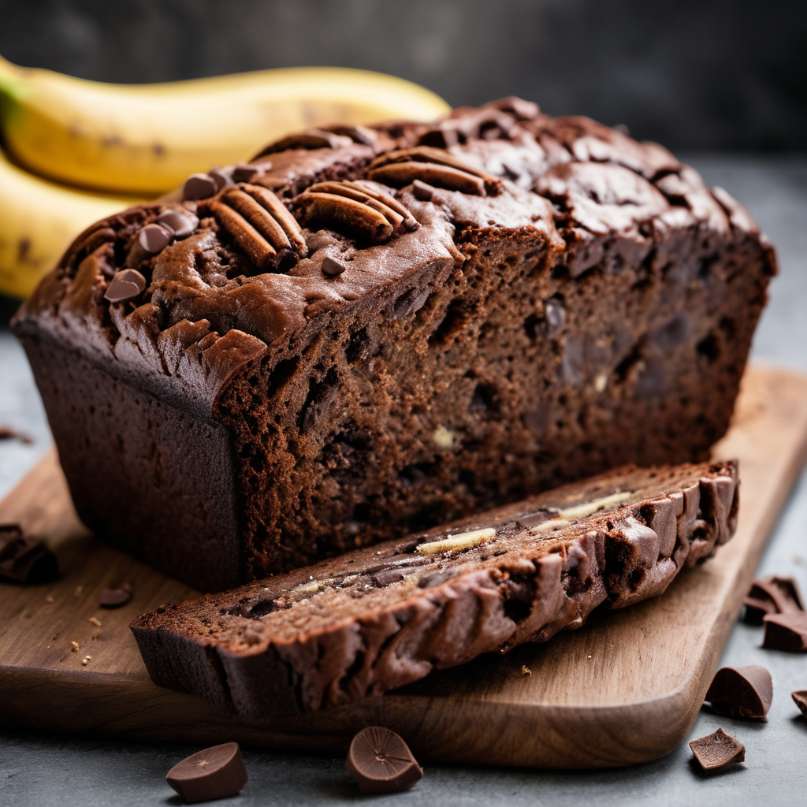

Csokoládés banánkenyér recept

Hozzávalók:
- 3 banán
- 150 g finomliszt
- 50 g kakaópor
- 100 g barna cukor
- 2 db tojás
- 60 ml növényi olaj (pl. napraforgóolaj)
- 60 ml tej
- 1 tk vanília kivonat
- 1 tk sütőpor
- Csokoládéforgácsok a díszítéshez
Elkészítés:
- Melegítsd elő a sütőt 180°C-ra, és készíts elő egy kenhető sütőformát.
- Egy tálban törj össze a banánokat egy villa segítségével, majd add hozzá a tojásokat, az olajat, a tejet és a vaníliát. Keverd össze alaposan.
- Egy másik tálban keverd össze a finomlisztet, a kakaóport, a barna cukrot és a sütőport.
- Öntsd hozzá a nedves hozzávalókat a szárazakhoz, majd keverd össze alaposan, hogy ne legyenek darabos részek.
- Öntsd a tésztát a sütőformába, és simítsd el a tetejét.
- Ha szeretnéd, szórd meg a tészta tetejét néhány csokoládéforgáccsal.
- Süsd kb. 45-50 percig, vagy amíg a kenyér közepére szúrt fogpiszkáló tiszta nem lesz.
- Hagyd hűlni a formában kb. 10 percig, majd vedd ki és hagyd teljesen kihűlni egy rácsra helyezve.
- Szeleteld fel és tálald.